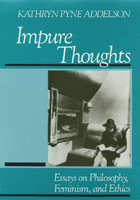

Insightful explorations of moral limits to human interactions
Insightful explorations of moral limits to human interactions


 Insightful explorations of moral limits to human interactions
Insightful explorations of moral limits to human interactions

|  |
Impure ThoughtsEssays on Philosophy, Feminism, and EthicsKathryn Pyne Addelsonpaper EAN: 978-0-87722-960-5 (ISBN: 0-87722-960-0) |
"I have learned an enormous amount from the essays in Impure Thoughts. They combine sure philosophical analysis with a mastery of the findings, not just the theories, of contemporary sociology. The result is an empirically based philosophy or, if you prefer, a philosophically grounded reading of what sociology has learned about problems of ethical import. Either way, readers will come away with something new, original, and profoundly useful."
—Howard Becker
This collection of essays places a distinguished academic career within the context of a personal and political reality that is grounded in a working-class background and a commitment to feminist activism. Kathryn Pyne Addelson reflects on her development as a philosopher and a feminist by reexamining the genesis of her own writings. Throughout these interdisciplinary pieces, she draws examples from the feminist, civil rights, and antiwar movements to offer a different way of approaching philosophical ethics.
Impure Thoughts is divided into two parts: "Writing Philosophy" and "Writing Feminism." In the first section, she addresses such questions as how professional authority contributes to creating and maintaining hierarchies of class, gender, age, and race. With reference to various reproductive debates, Addelson takes issue with philosophers who "preempt our moral meanings and our solutions to our social problems" under the assumption that cognitive authority is neutral. Throughout these essays, she tries to demonstrate how philosophy might become more empirical.
In the second section, the author describes the tension between upward mobility and class identity. She encounters the contradiction of her life—"I had left the love and anger of my own working-class neighborhood not by changing the world by moving up in it"—and works toward a resolution of her professional status with her working-class roots, her radical politics with her white professional-class privilege. Defining feminism as "a commitment to take women seriously," Addelson addresses class and gender bias, anarchist alternatives to several ethics, and the contradictions in writing feminism using the elite means and methods of the academy.
The essays, written between 1972 and 1989, offer criticism of philosophical and feminist ethics and social theory. In them Addelson offers the beginnings of a new ethics based on "symbolic interactionism," an anthropological, qualitative sociology with its roots in the work of John Dewey and George Herbert Mead. As part of her explicitly empirical method, she uses case studies in abortion, teen pregnancy, and other current moral problems.
"A brilliant and perceptive series of essays that reflect upon key issues of our time. They…provide a model for how philosophy may be informed and transformed in the future to meet the expectations of feminist critics."
—Arlene Kaplan Daniels
"[Addelson] articulates and uses a general approach that is rather like the currently fashionable 'postmodern' critical approaches to knowledge, but is mercifully without the jargon, righteous nihilism, or spacy abstractness that are common in 'postmodern' feminisms."
—Marilyn Frye
"Feminist philosophy at its best. It is accessibly written…a book that a lot of people will want to read."
—Society for Women in Philosophy
Part I: Writing Philosophy
1. Love and Anger
2. Nietzsche and Moral Change
3. Moral Revolution
4. The Man of Professional Wisdom
5. Moral Passages
6. Why Philosophers Should Become Sociologists (and Vice Versa)
Part II: Writing Feminism
7. Making Do
8. Anarchy and Morality
9. Anarchism and Feminism (with Martha Ackelsberg and Shawn Pyne)
10. What Do Women Do? Some Radical Implications of Carol Gilligan’s Ethics
11. Autonomy and Respect
12. Making Knowledge (with Elizabeth Potter)
A Postscript of Thanks
References
Index
 | Kathryn Pyne Addelson is Professor in the Department of Philosophy and the Program in the History of the Sciences at Smith College. |
Philosophy and Ethics
Women's Studies
© 2015 Temple University. All Rights Reserved. This page: http://www.temple.edu/tempress/titles/735_reg.html.